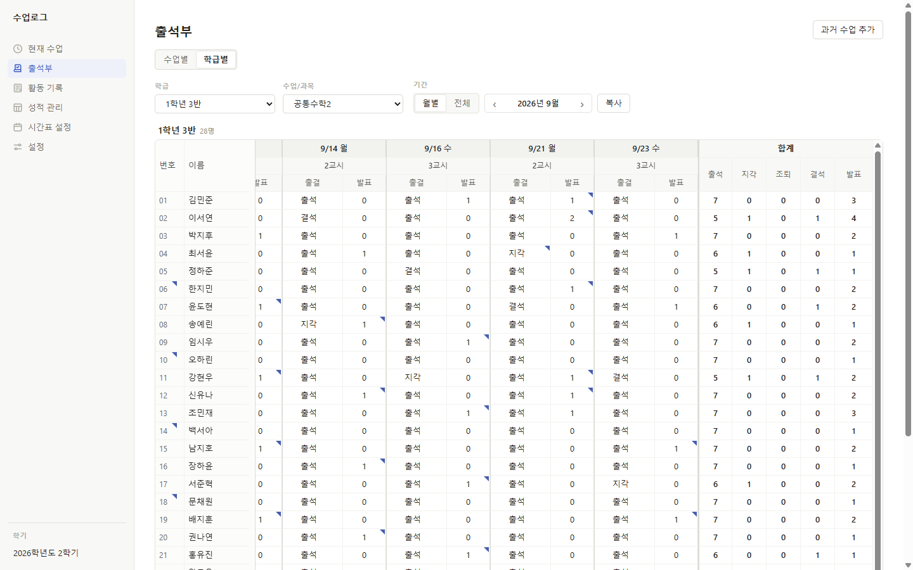
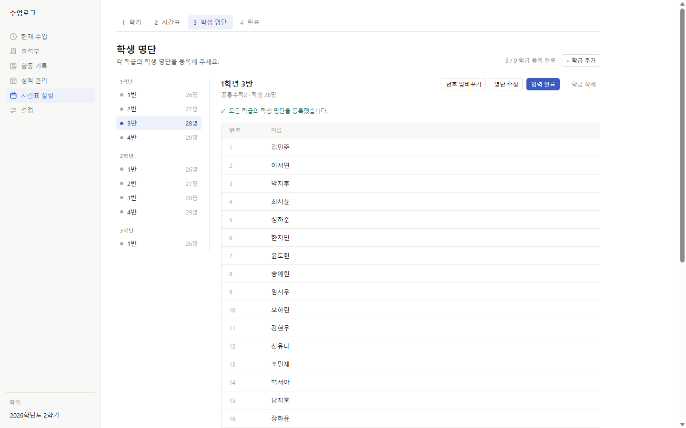
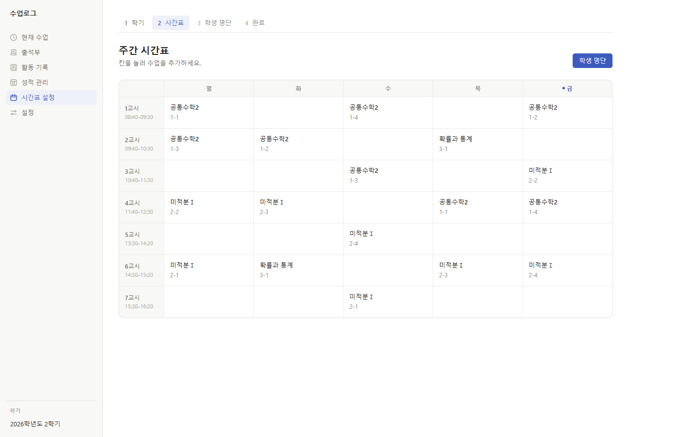
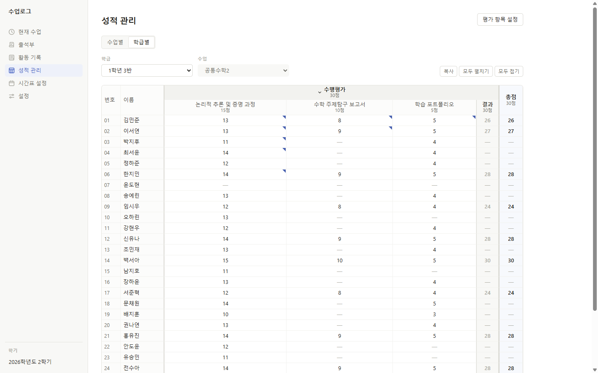
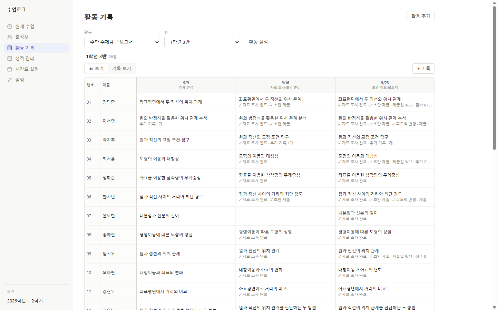
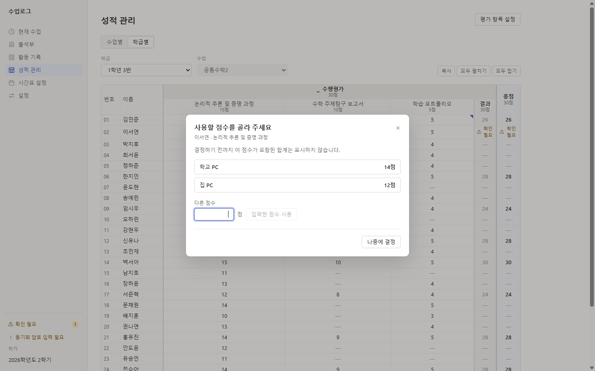

출석·지각·조퇴·결석을 날짜별로 확인합니다.
Windows desktop app for teachers
교사의 수업 기록을
한 곳에서.
학생 명단과 시간표를 준비하고, 수업 중 출결과 발표를 기록하고, 수행평가와 학생 활동까지 같은 흐름에서 관리합니다.

학급·학생학년과 반별 명단 관리
수업 기록출결·발표·메모 누적
평가·활동점수와 과정 기록
PC 동기화Google Drive로 이어서 사용
01
수업 전에, 학급과 시간표를 준비합니다.
학생 명단과 주간 시간표를 먼저 정리해두면 이후의 수업 기록이 같은 학급과 학생을 기준으로 이어집니다.
학생 명단
학년과 반을 오가며
학년과 반을 오가며
학생을 바로 확인합니다.
학급별 인원과 학생 번호·이름을 한눈에 확인하고, 이후 출석부·성적·활동 기록에서 같은 학생 데이터를 사용합니다.

주간 시간표
실제 수업 시간표를
실제 수업 시간표를
그대로 옮겨놓습니다.
공통수학2, 미적분Ⅰ, 확률과 통계처럼 담당 수업을 요일과 교시별로 배치해 한 주의 수업 흐름을 확인할 수 있습니다.

02
수업 중의 기록을 빠르게 남깁니다.
날짜별로 출결과 발표를 기록하고, 필요한 학생에게만 메모를 남겨 수업의 순간을 누적합니다.
발표 횟수와 수업 참여 기록을 학생별로 누적합니다.
특이사항이 있는 학생에게만 필요한 관찰 기록을 남깁니다.
03
평가는 표처럼 빠르게, 결과는 학생별로.
수행평가 항목을 구성하고 점수를 바로 입력하면서 진행 중인 평가와 결과를 같은 화면에서 관리합니다.

04
점수로 끝나지 않는 과정도 기록합니다.
활동 기록에서는 학생별 탐구 주제와 진행 과정을 회차별로 쌓아갑니다. 제출 여부, 날짜, 점수, 메모처럼 필요한 필드를 직접 구성할 수 있습니다.

05
학교 PC에서 쓰던 기록을 집에서도 이어갑니다.
Google Drive 동기화와 백업·복구 기능을 사용해 여러 PC에서 같은 수업 데이터를 이어서 관리할 수 있습니다.

1
PC에서 기록
인터넷 연결 여부와 관계없이 작업 흐름을 유지합니다.
2
Google Drive로 동기화
사용자가 연결한 Google 계정의 Drive를 이용합니다.
3
데이터 처리 방식 자세히 보기 →
다른 PC에서 이어서
학교 PC와 집 PC에서 같은 기록을 이어서 사용할 수 있습니다.
06
두 PC에서 같은 값을 바꿔도 한쪽을 임의로 버리지 않습니다.
같은 평가 점수가 서로 다르게 수정되면 두 값을 함께 보여주고, 사용자가 어떤 값을 사용할지 결정할 수 있습니다.
- 학교 PC와 집 PC의 후보 값을 함께 표시
- 직접 다른 값을 입력해 결정 가능
- 당장 정하지 않고 나중에 결정 가능

수업을 기록하는 데 필요한 것만,
한 흐름 안에.
수업로그는 학생과 수업을 관리하기 위한 개인용 Windows 데스크톱 앱입니다.